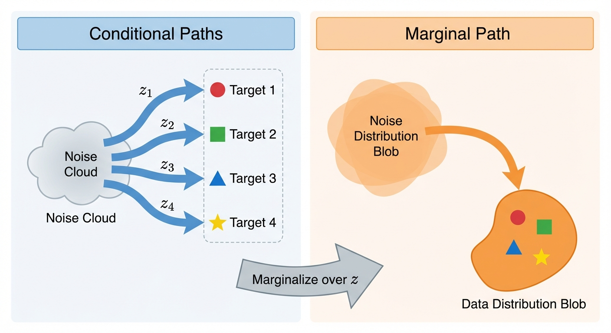
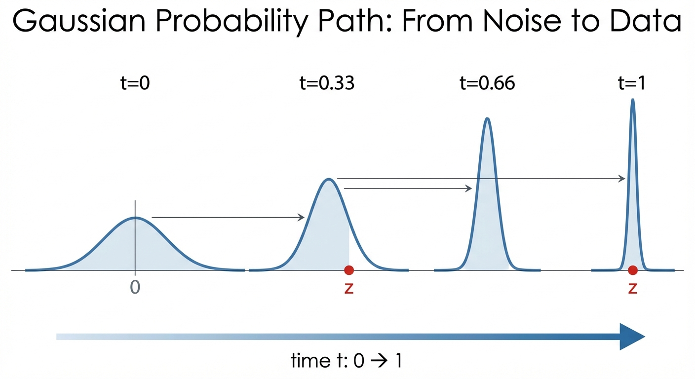

Diffusion & Flow Matching Part 3: Probability Paths
- A probability path is a smooth interpolation between noise and data distributions
- We build it from conditional paths (one per data point), then marginalize to get the full path
- The Gaussian probability path \(p_t(x|z) = \mathcal{N}(\alpha_t z, \beta_t^2 I)\) is the most common choice
- We derive the conditional vector field that generates this path — this becomes our training target
Probability Paths: From Noise to Data
In the previous post, we learned that vector fields generate flows. Now we need to design a flow that transforms probability distributions — specifically, one that turns noise into data.
The key idea: instead of thinking about individual particles, we’ll think about how an entire distribution of particles evolves over time. This is what a probability path describes.

Conditional Probability Path
Why “conditional”? Because it’s easier to think about one data point at a time. A conditional probability path \(p_t(x|z)\) describes how probability mass moves from noise toward a specific target point \(z\).
Formally, it’s a family of distributions over \(\mathbb{R}^d\) such that
\[ \begin{aligned} p_0(\cdot | z) = p_{init}, \quad p_1(\cdot | z) = \delta_z \quad \forall z \in \mathbb{R}^d \end{aligned} \tag{1}\] In other words, a conditional probability path interpolates between the initial distribution \(p_{init}\) and a single data point from \(p_{data}\).
Marginal Probability Path
Conditional paths are useful for construction, but what we really care about is the marginal probability path \(p_t(x)\) — the distribution we’d see if we sampled many different target points \(z\) from the data distribution and looked at where all the probability mass ends up.
We obtain it by first sampling \(z \sim p_{data}\) and then sampling \(x \sim p_t(\cdot | z)\):
\[ \begin{aligned} &z \sim p_{data}, \quad x \sim p_t(\cdot | z) \\ p_t(x) &= \int p_t(x, z) dz \\ &= \int p_t(x | z) p_{data}(z) dz \end{aligned} \]
We can verify that \(p_t(x)\) interpolates between \(p_{init}\) and \(p_{data}\).
At \(t=0\): The conditional distribution equals the initial distribution for all \(z\), so \(p_{init}(x)\) factors out of the integral:
\[ \begin{aligned} p_0(x) &= \int p_0(x | z) p_{data}(z) dz \\ &= \int p_{init}(x) p_{data}(z) dz && \text{(since } p_0(\cdot|z) = p_{init} \text{)} \\ &= p_{init}(x) \int p_{data}(z) dz && \text{(factor out } p_{init}(x) \text{)} \\ &= p_{init}(x) && \text{(probability integrates to 1)} \end{aligned} \]
At \(t=1\): The conditional distribution collapses to a point mass at \(z\). To evaluate this integral, we use the sifting property of the Dirac delta:
\[ \int f(z) \delta_z(x) \, dz = f(x) \]
To understand this, think of \(\delta_z(x)\) as the limit of increasingly narrow, tall functions that integrate to 1 — for example, a Gaussian centered at \(z\) with vanishing variance:
\[ \delta_{z,\epsilon}(x) = \frac{1}{\epsilon\sqrt{2\pi}} e^{-(x-z)^2/(2\epsilon^2)} \xrightarrow{\epsilon \to 0} \delta_z(x) \]
As \(\epsilon \to 0\), all the “mass” concentrates at \(x = z\). So when we integrate \(f(z)\delta_{z,\epsilon}(x)\) over \(z\), only the value near \(z = x\) contributes, giving \(f(x)\). Applying this:
\[ \begin{aligned} p_1(x) &= \int p_1(x | z) p_{data}(z) dz \\ &= \int \delta_z(x) p_{data}(z) dz && \text{(since } p_1(\cdot|z) = \delta_z \text{)} \\ &= p_{data}(x) && \text{(sifting property)} \end{aligned} \]
Example: Gaussian Probability Paths
The abstract definition is nice, but what does a probability path actually look like? The most common choice is a Gaussian probability path, where each \(p_t(x|z)\) is a Gaussian whose mean drifts toward \(z\) and whose variance shrinks over time.

The conditional Gaussian probability path is defined as:
\[ \textcolor{blue}{\mathbf{p}_t(\cdot | z)} = \mathcal{N}(\textcolor{green}{\alpha_t z}, \textcolor{orange}{\beta_t^2} I_d) \]
where \(\textcolor{blue}{\text{conditional distribution}}\) has mean \(\textcolor{green}{\text{interpolated toward data}}\) and variance \(\textcolor{orange}{\text{noise level}}\).
where \(\alpha_t\) and \(\beta_t\) are noise schedulers, and they are continously, monotonically differentiable functions with the following conditions:
\[ \begin{aligned} \alpha_0 &= \beta_1 = 0 \\ \beta_0 &= \alpha_1 = 1 \end{aligned} \]
which implies
\[ \begin{aligned} \mathbf{p}_0(\cdot | z) &= \mathcal{N}(0, I_d) \\ \mathbf{p}_1(\cdot | z) &= \lim_{\beta \to 0} \mathcal{N}(z, \beta^2 I_d) = \delta_z \end{aligned} \tag{2}\]
As the variance vanishes, the Gaussian concentrates all its mass at the mean \(z\), converging (in distribution) to the Dirac delta \(\delta_z\).
Therefore, this Gaussian probability path satisfies (1) and is a valid conditional probability path.
Intuitively, given a data point \(z\) at time \(t=1\), we gradually add noise to it for lower t till \(t=0\).
Conditional Vector Field for Gaussian Paths
We’ve defined a probability path — but remember from Part 2, flows are generated by vector fields. So what vector field generates our Gaussian probability path?
This is the key question: if we can find this vector field, it becomes our training target. We’ll train a neural network to approximate it.
Let us construct the conditional vector field (where \(\dot{\alpha}_t = \frac{\partial \alpha_t}{\partial t}\) and \(\dot{\beta}_t = \frac{\partial \beta_t}{\partial t}\) denote time derivatives):
\[ \begin{aligned} \textcolor{blue}{u_t^{\text{target}}(x | z)} &= \textcolor{green}{(\dot{\alpha}_t - \frac{\dot{\beta}_t}{\beta_t} \alpha_t) z} + \textcolor{orange}{\frac{\dot{\beta}_t}{\beta_t} x} \\ \end{aligned} \]
where the \(\textcolor{blue}{\text{target velocity}}\) has a \(\textcolor{green}{\text{term pointing toward data } z}\) and an \(\textcolor{orange}{\text{adjustment based on current position } x}\).
We can show that this conditional vector field is valid in the sense that its ODE trajectories \(X_t\) satisfies \[ \begin{aligned} X_t &\sim p_t(\cdot | z) = \mathcal{N}(\alpha_t z, \beta_t^2 I_d) \\ X_0 &\sim \mathcal{N}(0, I_d) \end{aligned} \]
How do we prove this? Let us first construct a conditional flow model \(\phi_t^{target}(x_0 | z)\)
\[ \begin{aligned} \psi_t^{target}(x_0 | z) &= \alpha_t z + \beta_t x_0 \\ x_0 \sim \mathcal{N}(0, I_d) \end{aligned} \]
We can show that the conditional flow model satisfies the conditional probability path:
\[ \begin{aligned} X_t &= \psi_t^{target}(X_0 | z) \\ &= \alpha_t z + \beta_t X_0 \\ &\sim \mathcal{N}(\alpha_t z, \beta_t^2 I_d) && \text{(since } X_0 \sim \mathcal{N}(0, I_d) \text{)} \end{aligned} \]
here we have used the property of the Gaussian distribution: if \(X \sim \mathcal{N}(\mu, \sigma^2 I_d)\), then \(aX + b \sim \mathcal{N}(a\mu + b, a^2 \sigma^2 I_d)\).
We conclude that the conditional flow model satisfies the conditional probability path.
Then we use the definition of the conditional flow model to get the conditional vector field:
\[ \begin{aligned} \frac{d}{dt} \psi_t^{target}(x_0 | z) &= u_t^{target}(\psi_t^{target}(x_0 | z) | z) \\ \iff \\ \dot{\alpha}_t z + \dot{\beta}_t x_0 = u_t^{target}(\alpha_t z + \beta_t x_0 | z) \\ \end{aligned} \]
we know that
\[ x_t = \alpha_t z + \beta_t x_0 \iff \\ x_0 = \frac{x_t - \alpha_t z}{\beta_t} \]
substituting \(x_0\) with \(\frac{x_t - \alpha_t z}{\beta_t}\) in the above equation, we get
\[ \begin{aligned} u_t^{target}(x_t | z) = (\dot{\alpha}_t - \frac{\dot{\beta}_t}{\beta_t} \alpha_t) z + \frac{\dot{\beta}_t}{\beta_t} x_t \\ \end{aligned} \]
Why do this? Because the vector filed must be written as \[ u_t(x | z) \] where x is the current position at time t.
We constructed probability paths that interpolate from noise to data. The key insight: build the marginal path \(p_t(x)\) from simpler conditional paths \(p_t(x|z)\), each targeting a specific data point.
For Gaussian paths \(p_t(x|z) = \mathcal{N}(\alpha_t z, \beta_t^2 I)\), we derived the conditional vector field: \[ \textcolor{blue}{u_t^{target}(x|z)} = \textcolor{green}{(\dot{\alpha}_t - \frac{\dot{\beta}_t}{\beta_t} \alpha_t) z} + \textcolor{orange}{\frac{\dot{\beta}_t}{\beta_t} x} \]
This is our training target — but there’s a catch: it depends on \(z\), which we don’t know at generation time. The next post resolves this with the marginalization trick.
What’s Next?
We now have:
- Probability paths that interpolate from noise to data
- Conditional vector fields that generate these paths
But there’s a problem: these are conditional on knowing the target data point \(z\). At generation time, we don’t know \(z\) — that’s what we’re trying to generate!
In the next post, we’ll see how the marginalization trick solves this problem, allowing us to train on conditional targets while learning a marginal vector field that works without knowing \(z\).